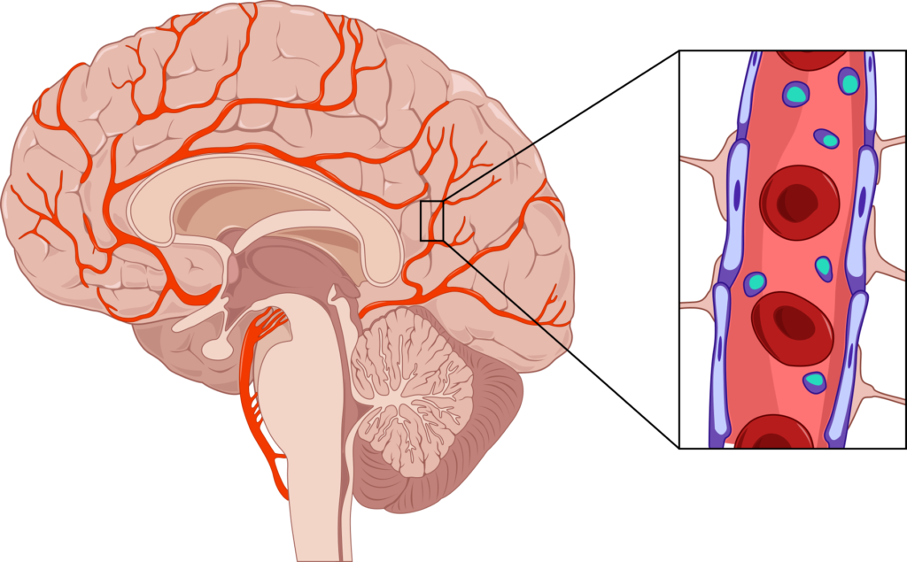
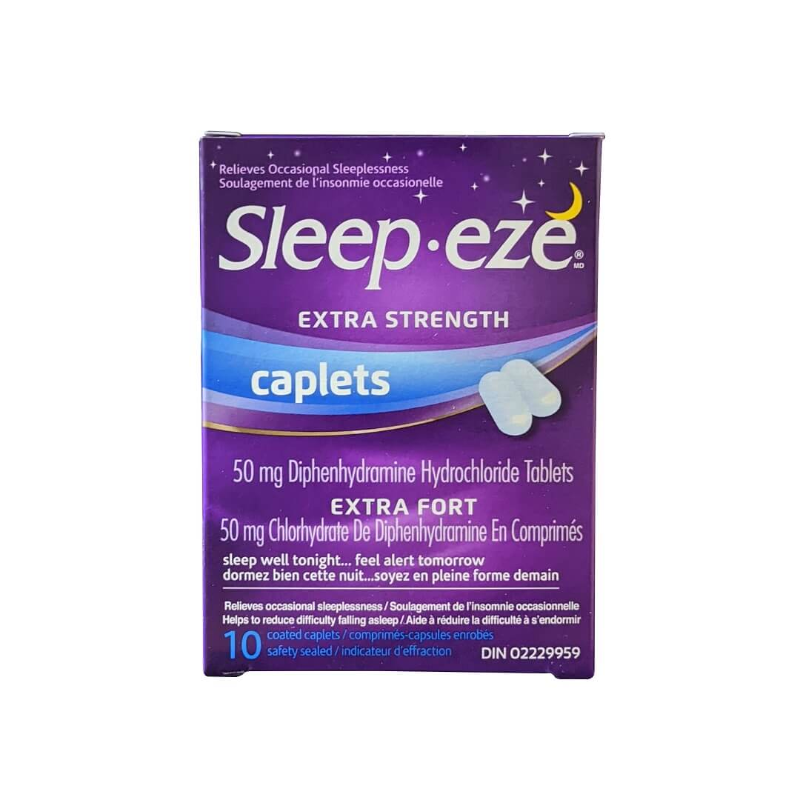

BBB (Blood-Brain Barrier)
Table of Contents
1. Table of Contents
2. Once upon a time …
Disclaimer
If you're looking for a medical advice, plase go see a doctor for consultation. (No, I'm not a doctor.)
This posting may have errors or inaccurate/misleading information by mistake.
When I was a kid, I got sick once and my doctor gave me a 10mg of Cetirizine, a very common anti-histamine pill that you can even buy at a 7/11 today. After taking the pill, I felt sleepy.
I told my doctor about it and he explained that still, Cetirizine was the best choice, saying other similar medicines would make me even more drowsy,
At the time, I didn't really understand why a pill would have that side effect. I mean, I thought it should make me feel more energetic…? because it's supposed to kill those "evil allergy germs," so I get helthier, right?
Of course, now I know there's no such thing as evil allergy germs. Certain drugs make us feel:
- Tired
- Excited
- Awake
There have been many studies describing why that happens. Although it's a complicated matter, the (superficial) mechanism itself is simple. It all comes down to how our "brain" works!
3. BBB(Blood-Brain Barrier)
Our brain has a barrier that selectively allows certain substances to pass from the bloodstream into the brain. The Blood-Brain Barrier (BBB) is this selective barrier that separates the blood from the brain's extracellular fluid in the CNS(Central Nervous System).
Its main function is to protect the brain from harmful substances while allowing essential nutrients to enter.
 Figure 1. An image of Blood-Brain Barrier in the brain, (Taken from "Cordance Medical").
Generally, lipid-soluble molecules, which are "oil-friendly," can pass through the BBB, whereas water-soluble molecules cannot.
Some drugs happen to cross the BBB even though we don't want them to, while some others drugs (most of psychoactive drugs) are specifically designed to do so.
3.1. Well-known drugs that enter the BBB with side-effects
3.1.1. Cetirizine
Cetirizine, one of the most famouse antihistamines, is what first came to my mind to write this article. it can cause drowsiness, although it's generally known for being less sedating compared to those first-generation antihistamines, which aren't really a preferred choice to treat your allergy.
It is indded far less fat-soluble, but it still penetrates the BBB, entering the CNS.
One of the important roles Histamine plays is that it regulates wakefulness and alertness in the brain. Therefore, Cetirizine blocking histamine H1 receptors in the CNS, even to a small extent, would result in drowsiness and sedation.
3.1.1.1. Diphenhydramine
Diphenhydramine is the 1st gen. antihistamine with anticholinergic toxicity. Although it's labled as an antihistamine, it's more often used as a sleep inducer today. The scary part is that it's quite anticholinergic and there are strong evidences that its chronic use is related to dementia.
 Figure 2. Wanna ride an express train to lowering your IQ with a risk of dementia?
In my opinion, it's unfortunate that in most countries you can buy this without doctor's prescription considering the risk after a long term use is significant.
3.1.1.1.1. Connection to dementia
There are many studies published, indicating that the long-term use of those drug, especially anticholinergic ones is strongly associated with an increased risk of dementia.
3.1.2. Adderall
The notorious drug Adderall uses a similar mechanism. It's designed to cross the BBB and directly stimulates the release of dopamine, disrupting the brain's natural reuptake process.
That results in a hyper-alertness, stronger than the regular alertness caused by caffeine as described above, which merely blocks some adenosine receptors.
3.1.3. Caffein and coffee
Arguably, the most loved drug among people today is coffee, though you don't need a doctor's prescription. Caffeine in tne coffee can cross the BBB and block adenosine receptors.
Adenosine makes you feel calm, but when caffeine blocks its receptors, your brain can't calm down, resulting in a state of alertness. Too much caffeine can lead to excessive alertness, causing side effects like insomnia, as shown below:
Step 1: Caffeine Ingestion
|
v
+-----------------------+
| Caffeine enters the |
| blood stream |
+-----------------------+
|
v
Step 2: Caffeine Crosses the BBB
|
v
+-----------------------+ +-----------------------+
| Caffeine crosses | -> | Caffeine reaches |
| the Blood-Brain | | the brain |
| Barrier | +-----------------------+
+-----------------------+ |
v
Step 3: Blocking Adenosine Receptors
|
v
+-----------------------+ +-----------------------+ +-----------------------+
| Caffeine binds to | -> | Adenosine receptors | -> | Blocking adenosine |
| adenosine receptors | | are blocked | | reduces the calming |
+-----------------------+ +-----------------------+ | effect |
+-----------------------+
|
+------------------------------------------+
|
v
Step 4: Increased Alertness
|
v
+-----------------------+ +-----------------------+
| State of alertness | -> | Excessive alertness |
| is maintained | | can lead to insomnia |
+-----------------------+ | and anxiety |
+-----------------------+